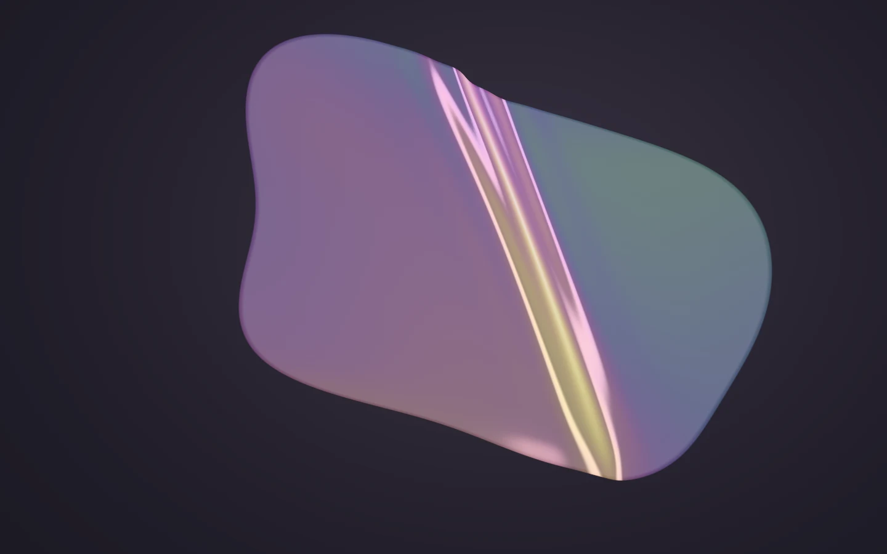

移動觀看的位置，發現另一種光。
拖曳，或聚焦畫面後使用方向鍵。
THIN BOUNDARIES / A SURFACE OF LIGHT
光的薄界
極薄的表面，讓光顯出深度。
一處偏心的折痕，藏著觀看位置尚未抵達的顏色。
作品筆記
一片懸浮的薄膜，被不對稱的張力輕輕折起。光沿著折面移動，珍珠白、煙紫與銅金在同一個表面輪流浮現。觀看的位置改變，表面才透露另一層深度。
膜面與厚度場固定在物件座標上；依形變重新計算法線，以多波長的薄膜反射近似呈現虹彩。這是為即時觀看設計的光學與張力近似，沒有完整的布料或光譜路徑追蹤模擬。
暫停會停止自動演化，仍可手動觀看；「細看」靠近折痕。方向鍵調整角度，Home 回到正面；手機可水平拖曳，垂直滑動仍可捲頁。
2026 · 原生 WebGL / 程序化膜面 / 薄膜干涉
適合：作品封面、材質研究、沉浸式展覽入口。